|
3-4-2-1
|
Korea Republic | 2 | - | 1 | Czechia |
3-4-2-1
|
| HT 0-0 | ||||||
|
FIFA World CupFriday 12 June 2026
|
||||||
- Venue
- Estadio Guadalajara
- Attendance
- 44,985
- Referee
- Amin Mohamed Omar
Substitution62'
Lee Jae-Sung
Hwang Hee-Chan
Goal67'
Hwang In-Beom
Assist: Lee Kang-In
- 2
Substitution69'
Lee Tae-Seok
Eom Ji-Sung
Son Heung-Min
Oh Hyeon-Gyu
Goal80'
Oh Hyeon-Gyu
Assist: Hwang In-Beom
- 2
Substitution84'
Hwang In-Beom
Kim Jin-Gyu
Paik Seung-Ho
Park Jin-Seob
Yellow card90+6'
Lee Gi-Hyuk
Whistle45+4'
45+4'
Goal59'
L. Krejčí
Assist: V. Coufal
- 3
Substitution64'
P. Šulc
A. Hložek
P. Schick
T. Chorý
L. Provod
M. Sadílek
Substitution84'
A. Sojka
M. Chytil
Korea Republic | |
|---|---|
Goalkeeper | |
| 1 | Kim Seung-Gyu |
Defender | |
| 2 | Lee Han-Beom |
| 3 | Lee Gi-Hyuk 90+6' |
| 4 | Kim Min-Jae |
Midfielder | |
| 6 | Hwang In-Beom 67'84' |
| 8 | Paik Seung-Ho 84' |
| 10 | Lee Jae-Sung 62' |
| 13 | Lee Tae-Seok 69' |
| 19 | Lee Kang-In |
| 22 | Seol Young-Woo |
Forward | |
| 7 | Son Heung-Min 69' |
Substitutes | |
| 11 | Hwang Hee-Chan 62' |
| 16 | Park Jin-Seob 84' |
| 18 | Oh Hyeon-Gyu 69'80' |
| 24 | Kim Jin-Gyu 84' |
| 25 | Eom Ji-Sung 69' |
Czechia | |
Goalkeeper | |
| 1 | M. Kovář |
Defender | |
| 4 | R. Hranáč |
| 6 | Š. Chaloupek |
| 7 | L. Krejčí 59' |
Midfielder | |
| 5 | V. Coufal |
| 15 | P. Šulc 64' |
| 17 | L. Provod 64' |
| 20 | J. Zelený |
| 22 | T. Souček |
| 24 | A. Sojka 84' |
Forward | |
| 10 | P. Schick 64' |
Substitutes | |
| 9 | A. Hložek 64' |
| 13 | M. Chytil 84' |
| 18 | M. Sadílek 64' |
| 19 | T. Chorý 64' |


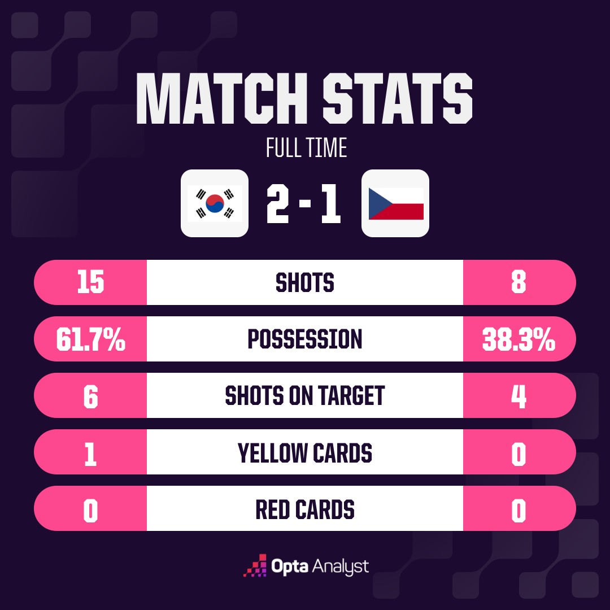
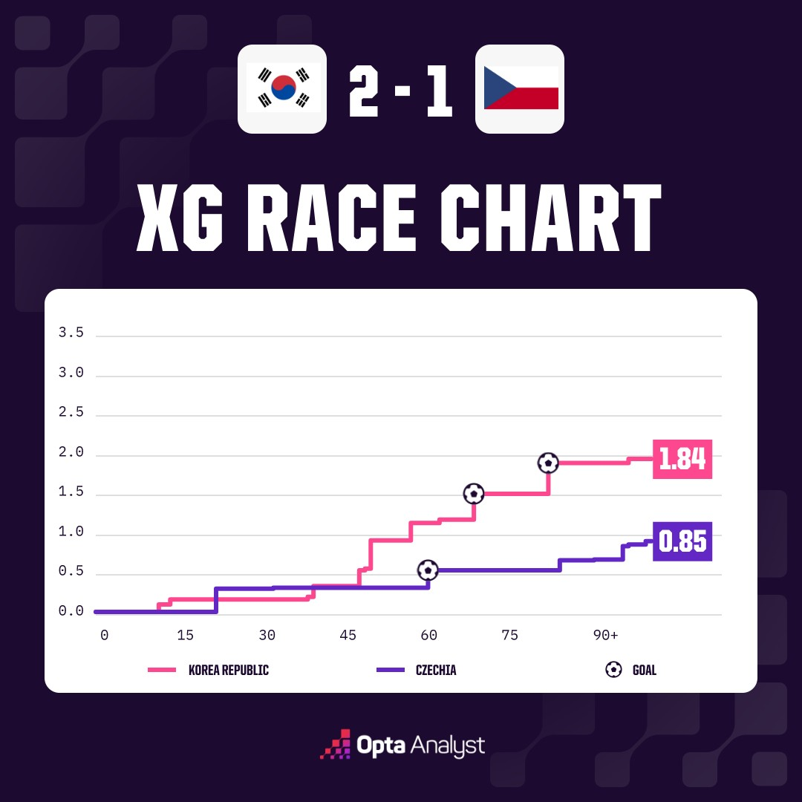
98'
Czechia have lost their last 3 games in the FIFA World Cup, their longest losing streak in the competition (since at least 1965/1966).
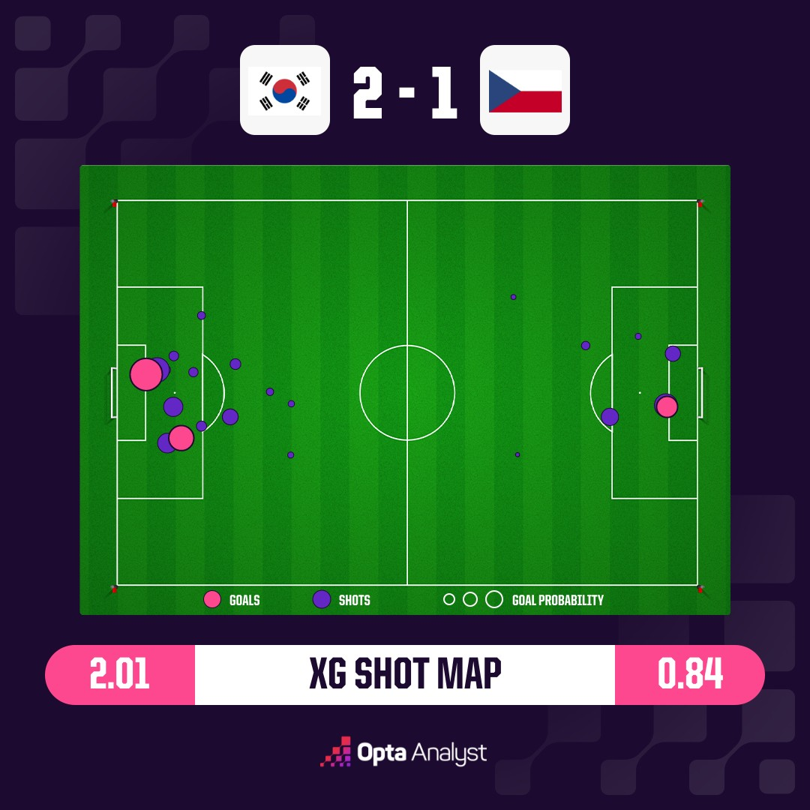
90+7'
IT’S ALL OVER! Korea Rep have taken the victory, winning 2-1 thanks to goals from Oh Hyeon-Gyu and Hwang In-Beom. Korea Rep can celebrate, but Czechia will have to lick their wounds.
90+7'
It’s backs to the wall now — Korea Rep throwing everything into defending their advantage, with a flurry of crucial interventions.
90+6'
BOOKING! Yellow card for Lee Gi-Hyuk, who is penalised for a foul. The referee waves away their remonstrations, and now they will have to be careful.
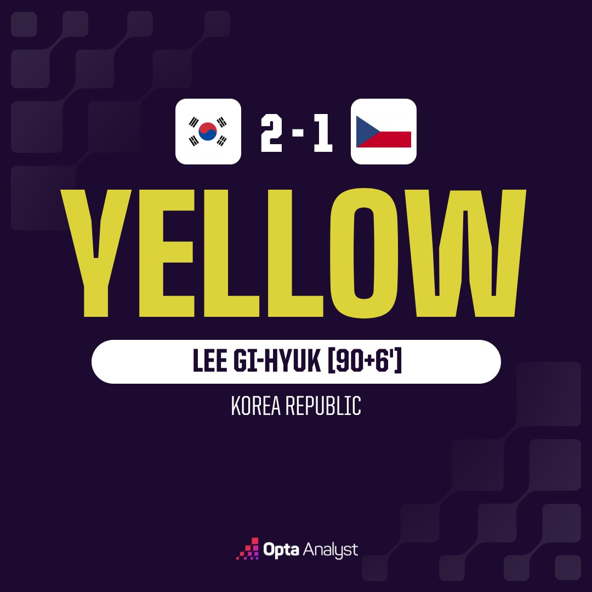
90+6'
A rash challenge from Lee Gi-Hyuk, who sends Ladislav Krejčí tumbling, giving Czechia a free-kick. It is not in a threatening position, but it gives them a chance to get back on the ball.
90+5'
A free-kick to Korea Rep, as Tomás Chorý goes in and fouls Kim Jin-Gyu. However, Czechia will not mind giving one away in this area too much, with plenty of distance to their goal.
90+4'
A chance goes begging as Adam Hložek gets off a shot that does not hit the target. They might have done better with that one, but instead it is a goal-kick to Korea Rep.
90+4'
Great block from Stepán Chaloupek, as they get in the way of an attempt from Kim Jin-Gyu that might have been set to cause the goalkeeper some problems. Solid defending from the Czechia player.
90+3'
CLOSE! Michal Sadílek gets into a decent shooting position inside the Korea Rep area, and manages to find space to get an effort off. However, Kim Seung-Gyu is equal to it.
90+2'
Free-kick! A foul from Mojmír Chytil on Kim Min-Jae. It is well away from Czechia’s goal, so it is unlikely to result in a chance for Korea Rep.
90+1'
A free-kick to Korea Rep, as Robin Hranáč goes in and fouls Lee Kang-In. However, Czechia will not mind giving one away in this area too much, with plenty of distance to their goal.
88'
Kim Seung-Gyu is called into action to keep out a shot from outside the box by Michal Sadílek. The effort from the Czechia player was on target, but Korea Rep shot-stopper got to it.
85'
Free-kick! A foul from Lee Han-Beom on Tomás Chorý. It is well away from Korea Rep’s goal, so it is unlikely to result in a chance for Czechia.
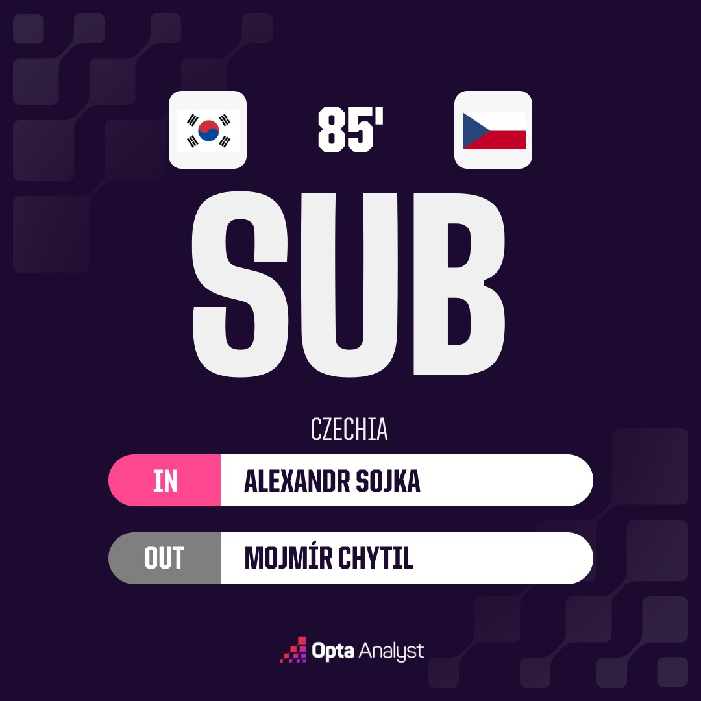
84'
A substitution for Czechia sees Alexandr Sojka replaced by Mojmír Chytil. There does not appear to be any obvious sign of an injury, so that is a tactical switch.
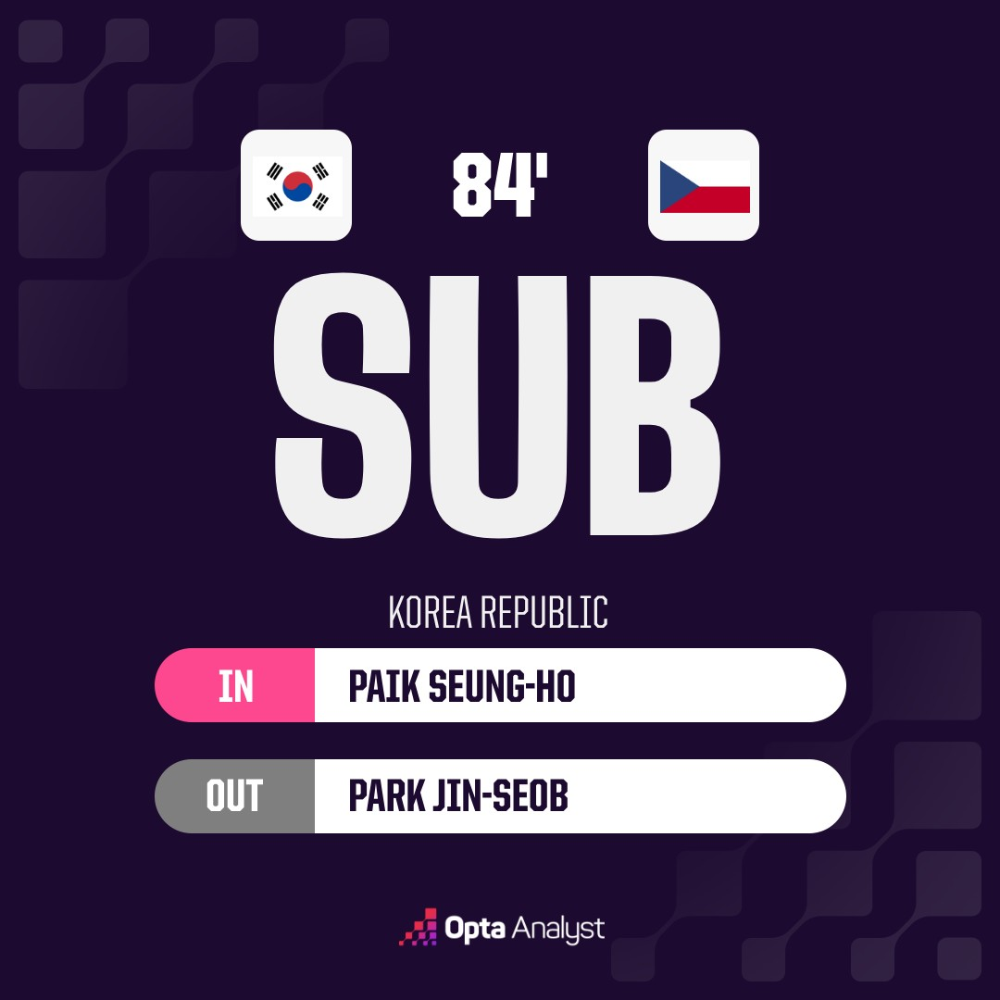
84'
A substitution for Korea Rep sees Paik Seung-Ho replaced by Park Jin-Seob. There does not appear to be any obvious sign of an injury, so that is a tactical switch.
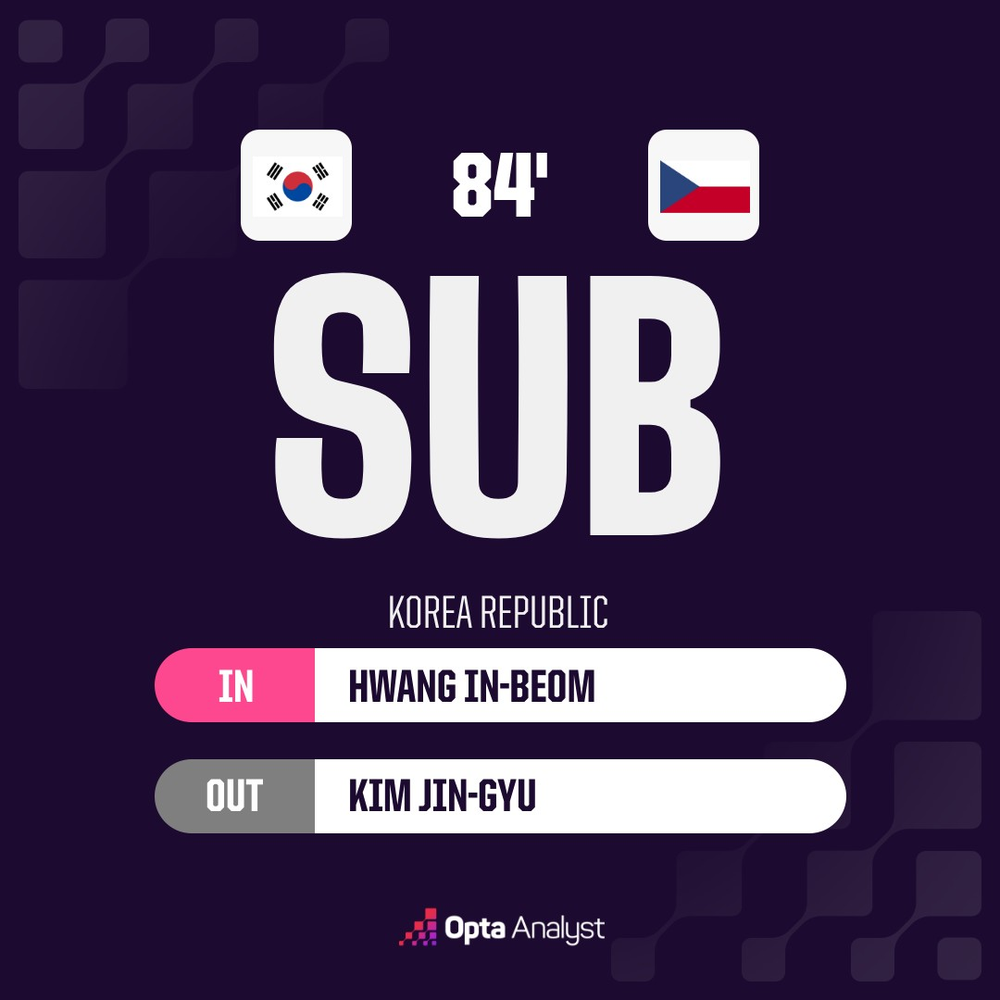
84'
The Korea Rep manager is looking to the substitutes’ bench, bringing on Kim Jin-Gyu in place of Hwang In-Beom. Will the change make a difference? Let’s find out!
83'
Free-kick! A foul from Tomás Chorý on Paik Seung-Ho. It is well away from Czechia’s goal, so it is unlikely to result in a chance for Korea Rep.
82'
Adam Hložek's effort is deflected out for a corner. Can Czechia make anything of this set-piece?
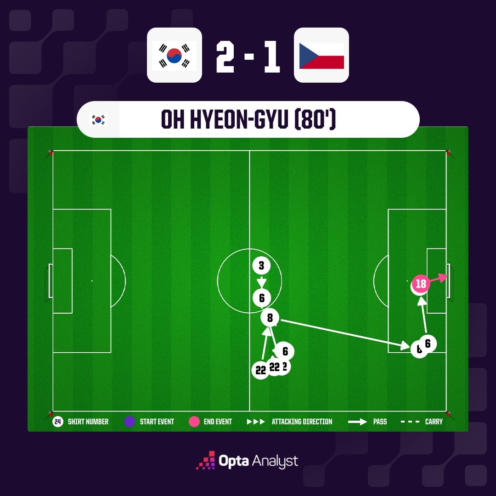
80'
GOAL! The breakthrough finally arrives and will that prove to be the winner for Korea Rep? They have taken a late lead courtesy of Oh Hyeon-Gyu's finish.
77'
A lapse in concentration from Tomás Souček, as they stray offside and bring to an end what was a promising move for Czechia, who are pushing hard for the goal they so desperately want.
77'
A lull in this match, as the teams prob and probe, but without much success. It has been 10 minutes since there was an attempt from either side, though Korea Rep are seeing more of the ball, with 69 per cent possession to Czechia’s 31 per cent during that time.
76'
This could be a chance for Czechia, after Lee Han-Beom fouls Adam Hložek, handing them a free-kick in a threatening area. A good set-piece from here could really test the Korea Rep defense!
76'
With 15 minutes left to play, plus stoppage time, it is Korea Rep who have had the better of the possession, with 63.18%. Czechia, on the other hand, have had 36.82% of the ball so far.
74'
A rash challenge from Ladislav Krejčí, who sends Lee Kang-In tumbling, giving Korea Rep a free-kick. It is not in a threatening position, but it gives them a chance to get back on the ball.
74'
A foul from Stepán Chaloupek on Hwang Hee-Chan sees Korea Rep win a free-kick, but it is not in a dangerous position, so Czechia should be confident they can defend it easily enough.
70'
A foul from Robin Hranáč on Oh Hyeon-Gyu sees Korea Rep win a free-kick, but it is not in a dangerous position, so Czechia should be confident they can defend it easily enough.
69'
Korea Rep are making a tactical change. Son Heung-Min is leaving the field and in their place comes Oh Hyeon-Gyu – we will soon see if this switch has the desired impact.
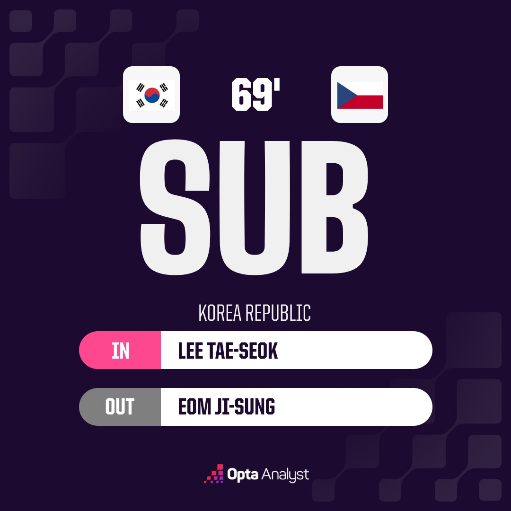
69'
A substitution for Korea Rep sees Lee Tae-Seok replaced by Eom Ji-Sung. There does not appear to be any obvious sign of an injury, so that is a tactical switch.
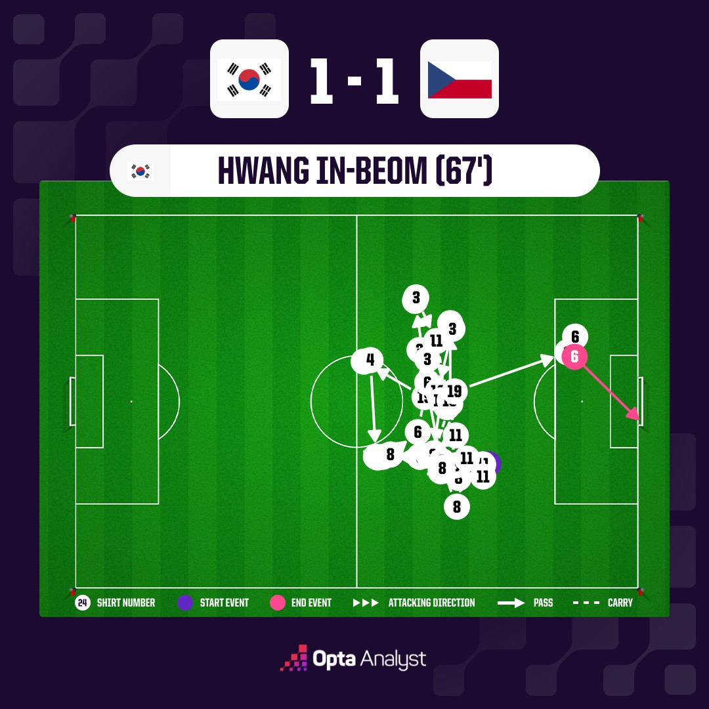
67'
GOAL! Hwang In-Beom scores from inside the penalty area and it’s all level between Korea Rep and Czechia. All to play for now, can either side go on and find a winner?
67'
Despite the early setback, Korea Rep are beginning to find some rhythm. Can they turn this possession into pressure?
66'
With 25 minutes left to play, it’s a good chance to check in on the shot count. Korea Rep have mustered 12 so far, with 4 of those landing on target. On the other hand, Czechia have gotten 3 of their 1 of attempts on target.
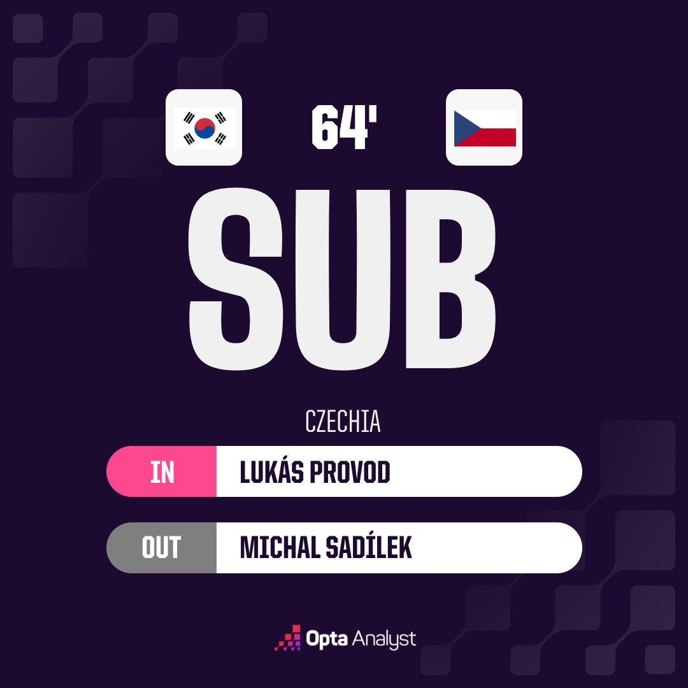
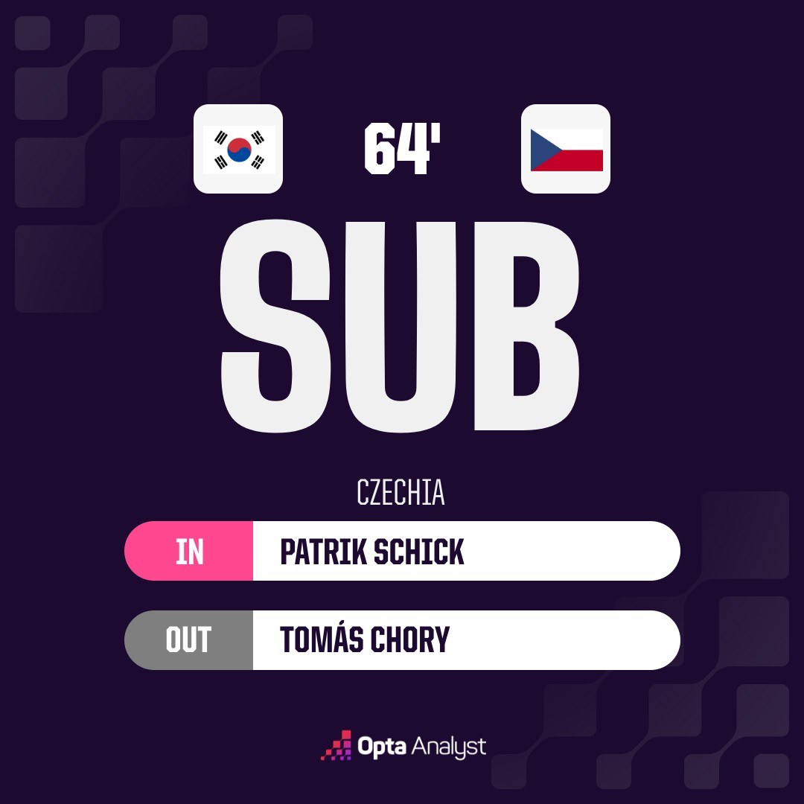
64'
Czechia are making a tactical change. Lukás Provod is leaving the field and in their place comes Michal Sadílek – we will soon see if this switch has the desired impact.
64'
Substitution! Tomás Chorý replaces Patrik Schick for Czechia as the manager shuffles the pack. Can Tomás Chorý make an impression as this match continues?
64'
Czechia are making a tactical change. Pavel Šulc is leaving the field and in their place comes Adam Hložek – we will soon see if this switch has the desired impact.
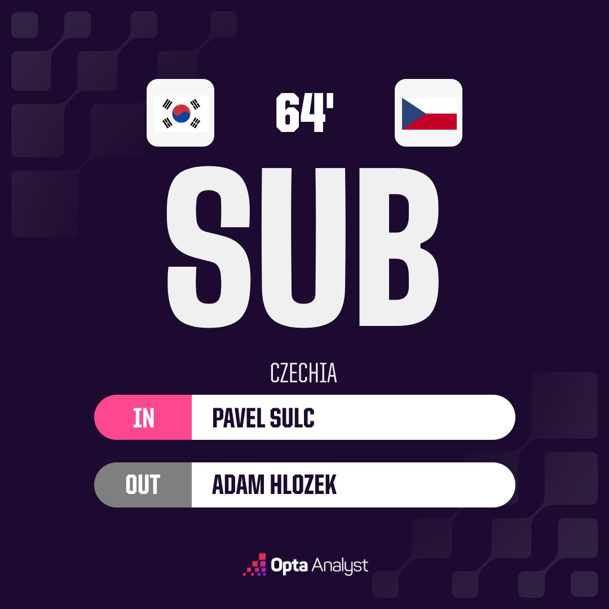
63'
A free-kick to Korea Rep, as Ladislav Krejčí goes in and fouls Lee Kang-In. However, Czechia will not mind giving one away in this area too much, with plenty of distance to their goal.
62'
Korea Rep are making a tactical change. Lee Jae-Sung is leaving the field and in their place comes Hwang Hee-Chan – we will soon see if this switch has the desired impact.
62'
Seol Young-Woo goes in on Jaroslav Zelený and concedes a foul. The free-kick is not in a particularly dangerous area from Korea Rep’s viewpoint, though.
61'
No luck! Lee Jae-Sung takes on a shot that, had they got it right, might have been set to test the goalkeeper, but instead it is sent off target and Czechia come away unscathed.
59'
GOAL! The drama continues as Czechia take the lead, courtesy of a goal from Ladislav Krejčí. There is still plenty of time remaining for more potential twists and turns, but as things stand Czechia are on track for victory.
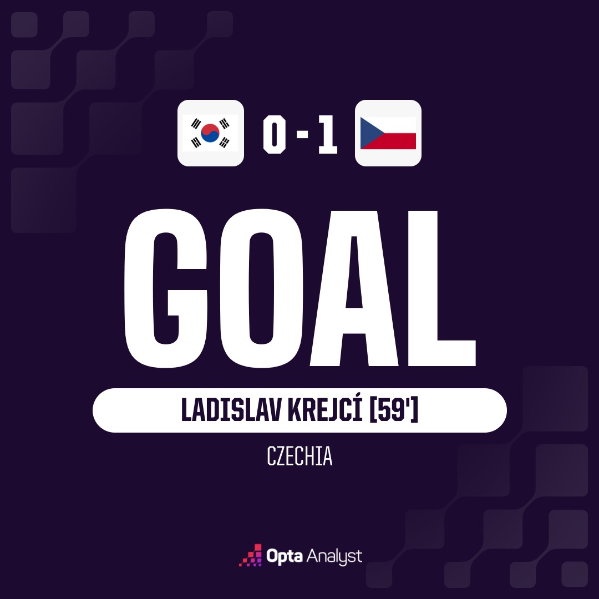
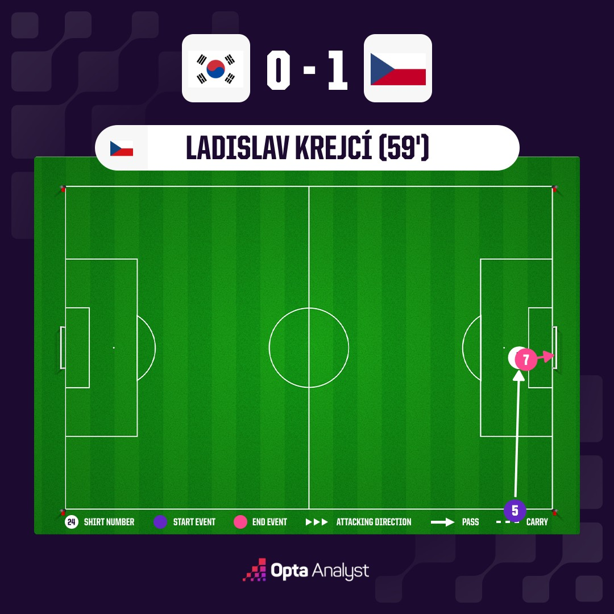
56'
Korea Republic have attempted the last 7 shots in this game, Czechia last shot was taken by Pavel Šulc in the 32nd minute.
56'
MISSED! That is really poor from Son Heung-Min, who fails to convert from a golden opportunity, with the goal gaping. Will Korea Rep pay for their profligacy, or can they put that miss behind them?
54'
Plenty of the ball in the last quarter-of-an-hour of this match for Korea Rep, but still Czechia stand firm, despite having had only 34.89% of the ball in that period. Can Korea Rep make their possessional dominance count?
53'
A free-kick in a dangerous position now for Korea Rep, after a foul from Tomás Souček on Lee Jae-Sung. Can Korea Rep make Czechia pay for that rashness from Tomás Souček?
49'
What a miss! That was a huge chance for Lee Jae-Sung, but they have failed to convert. What an opportunity that was for Korea Rep.
49'
CLOSE! Hwang In-Beom gets into a decent shooting position inside the Czechia area, and manages to find space to get an effort off. However, Matej Kovář is equal to it.
47'
Free-kick! A foul from Kim Min-Jae on Patrik Schick. It is well away from Korea Rep’s goal, so it is unlikely to result in a chance for Czechia.
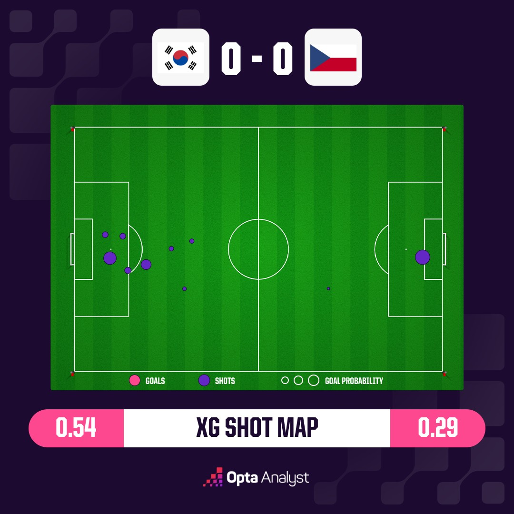
45+4'
Half-time! We reach the interval with the score level at 0-0 between Korea Rep and Czechia. Will we see a winner in the second half?
45+3'
A chance goes begging as Hwang In-Beom gets off a shot that does not hit the target. They might have done better with that one, but instead it is a goal-kick to Czechia.
45+2'
Son Heung-Min has attempted 5 shots, the first time he has attempted at least 5 shots in a match in the FIFA World Cup since facing Portugal on 2nd December 2022 (5 shots).
45+2'
BLOCKED! That was close. Son Heung-Min got off a shot, which was heading in, but Tomás Souček was on hand to make a vital intervention. Great block!
43'
Robin Hranáč goes in on Son Heung-Min and concedes a foul. The free-kick is not in a particularly dangerous area from Czechia’s viewpoint, though.
41'
Good play from Alexandr Sojka, who draws a foul from Lee Jae-Sung to hand Czechia a free-kick in a dangerous position. Will they create something from this set-piece?
41'
Czechia have not had a shot on target so far in this game.
40'
A rash challenge from Vladimír Coufal, who sends Lee Tae-Seok tumbling, giving Korea Rep a free-kick. It is not in a threatening position, but it gives them a chance to get back on the ball.
39'
MISS! A shot from Son Heung-Min ends up being off target. They might have done a bit better with that one, but it remains Korea Rep 0-0 Czechia.
38'
A chance goes begging as Son Heung-Min gets off a shot that does not hit the target. They might have done better with that one, but instead it is a goal-kick to Czechia.
37'
A free-kick to Korea Rep, as Vladimír Coufal goes in and fouls Lee Jae-Sung. However, Czechia will not mind giving one away in this area too much, with plenty of distance to their goal.
34'
A foul from Lee Tae-Seok on Vladimír Coufal sees Czechia win a free-kick, but it is not in a dangerous position, so Korea Rep should be confident they can defend it easily enough.
32'
That is a disappointing effort from Pavel Šulc, who went for glory but got their attempt wrong, and the shot sailed off target. A frustrating moment for Czechia.
29'
A free-kick to Korea Rep, as Vladimír Coufal goes in and fouls Lee Gi-Hyuk. However, Czechia will not mind giving one away in this area too much, with plenty of distance to their goal.
28'
A free-kick to Czechia, as Lee Han-Beom goes in and fouls Pavel Šulc. However, Korea Rep will not mind giving one away in this area too much, with plenty of distance to their goal.
25'
No luck – it’s offside! Seol Young-Woo looked to dart in behind and get on the end of a pass, yet they just went too early, and the flag is up to signal offside.
23'
Lukás Provod goes in on Paik Seung-Ho and concedes a foul. The free-kick is not in a particularly dangerous area from Czechia’s viewpoint, though.
22'
MISS! The score remains 0-0, with Korea Rep relieved after Czechia’s Tomás Souček goes for goal but sends their attempt off target. Not one to write home about, that one.
21'
A chance now for Czechia to get a good delivery into the box, after the ball is diverted behind for a corner. Czechia have been pushing for what would be a key goal, but Korea Rep have stood firm so far.
21'
It is a corner now to Czechia, with Korea Rep somewhat hanging on here as they look to hold out for a positive result. Can Czechia make something of this set-piece opportunity?
19'
A free-kick to Czechia, as Kim Min-Jae goes in and fouls Lukás Provod. However, Korea Rep will not mind giving one away in this area too much, with plenty of distance to their goal.
18'
That’s offside! A switched-on defensive line from Korea Rep, as they step up at the right time to catch Lukás Provod offside, and the assistant referee’s flag is up.
17'
There is plenty of possession for Korea Rep, with 72.36% compared to Czechia 27.64 % in the last 15 minutes. However, Korea Rep have not been able to turn that dominance of the ball into a goal.
16'
Good play from Son Heung-Min, who draws a foul from Pavel Šulc to hand Korea Rep a free-kick in a dangerous position. Will they create something from this set-piece?
15'
A chance now for Czechia to get a good delivery into the box, after the ball is diverted behind for a corner. Czechia have been pushing for what would be a key goal, but Korea Rep have stood firm so far.
14'
Great block from Tomás Souček, as they get in the way of an attempt from Son Heung-Min that might have been set to cause the goalkeeper some problems. Solid defending from the Czechia player.
14'
Czechia have a corner to defend now after Matej Kovář diverts an attempt from Lee Kang-In out of play. Can Korea Rep take this chance to get a good delivery in and really test their opponent’s defence?
12'
MISS! The score remains 0-0, with Czechia relieved after Korea Rep’s Lee Han-Beom goes for goal but sends their attempt off target. Not one to write home about, that one.
12'
Korea Rep win a corner after Son Heung-Min sees a shot diverted wide by Robin Hranáč. Can Korea Rep make this opportunity count, or will Czechia defend this?
11'
This game is certainly in a bit of a lull now, with neither team having had an attempt at goal in the past 10 minutes. It could do with something to spark it into life. Korea Rep have had more possession during the quiet spell, but are yet to do much with it.
10'
Corner! The ball goes behind and now Korea Rep will aim to deliver a good ball into the penalty area and test that Czechia defence, which has been frustrating them in recent minutes.
9'
It’s been tight so far, and Czechia are making sure it stays that way with strong defensive discipline and well-timed clearances.
9'
Can Korea Rep make this chance count? They have won a free-kick in a threatening position after a foul from Ladislav Krejčí on Lee Kang-In. Will Czechia's defence be tested here?
6'
Confident start by Korea Rep, knocking it around with purpose and keeping control in the opening phase.
3'
That’s offside! A switched-on defensive line from Czechia, as they step up at the right time to catch Son Heung-Min offside, and the assistant referee’s flag is up.
1'
Up and running! Czechia have kicked off and this FIFA World Cup match is now under way at Estadio Guadalajara. Let’s hope for an intriguing battle on the pitch.
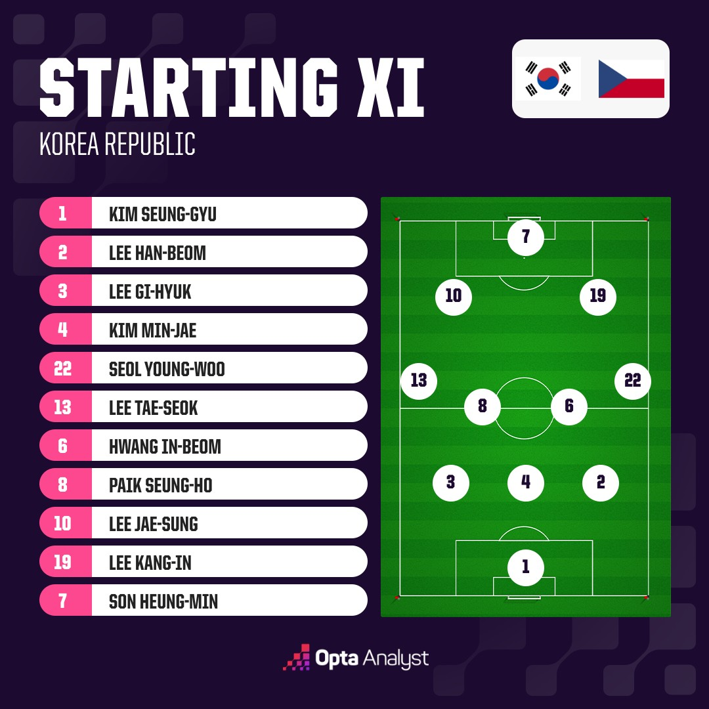
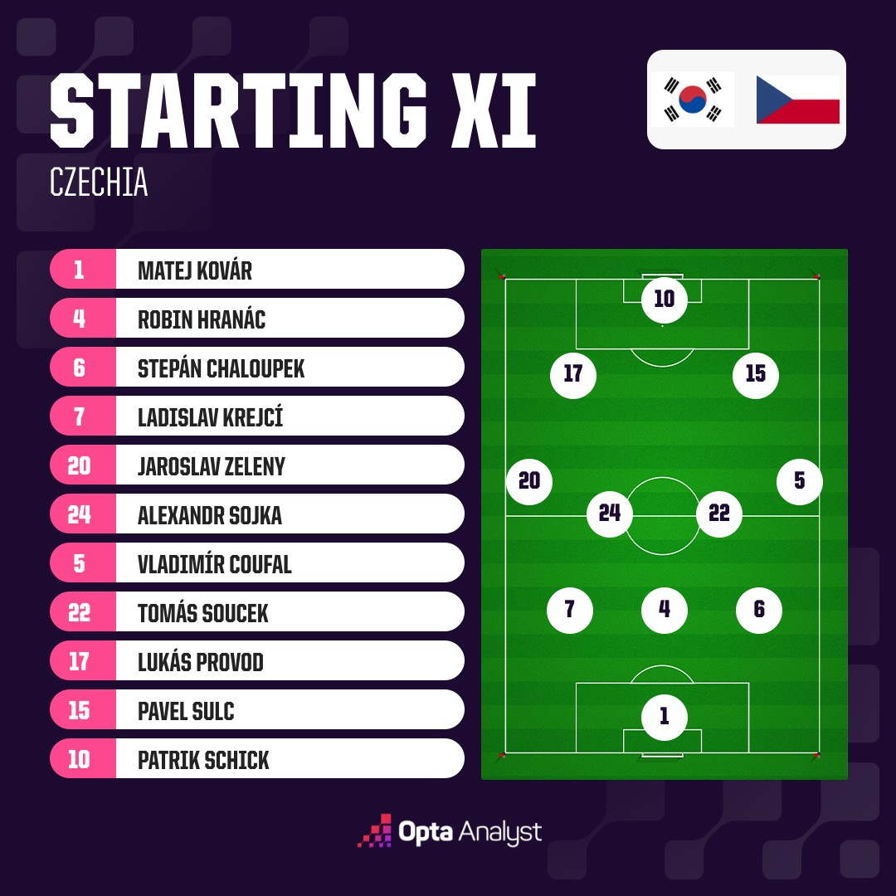
Czechia have the chance to extend their run without defeat to seven matches when they play Korea Republic in the FIFA World Cup group stage at Zapopan's Estadio Guadalajara on Thursday.
It's the first match of the competition for both sides. Korea Republic's last match saw them triumph 1-0 over El Salvador in a friendly at BYU South Field on June 3. Lee Dong-Gyeong scored in the win. In four games this year, they have two wins and two losses.
Czechia's last game saw them triumph 3-1 over Guatemala in a friendly on June 4 at Sports Illustrated Stadium. Patrik Schick, Tomás Chory, and Denis Visinsky scored in the win.
Korea Republic won the last meeting between the teams, coming out on top 2-1 in a friendly at Fortuna Arena in June 2016. Yoon Bit-Garam scored first for the Korea Republic side in the 26th minute. Suk Hyun-Jun also found the net. Marek Suchy scored the lone goal for the Czechia side in the 46th minute.
Korea Republic have been led by Cho Gue-Sung and Son Heung-Min this year. The two players are the team's joint top scorers with two goals apiece. Ladislav Krejcí and Schick have been Czechia's most prolific players this year, each finding the target twice.
In their last six matches in all competitions, Korea Republic have won four and lost two. The Korea Republic side scored nine and conceded five in that period, scoring first in four of the six contests. They had two first-half goals, while their opponents netted two times in the first 45 minutes. Czech Republic have won four and drawn two in their last six. The Czechia side scored 16 and conceded six over that stretch, netting first in five of the six. Most of their goals (11) came in the first half, while their opponents netted three times before the break.
-
General
Possession 61.5% 61.46238.53838.5% Possession lost in defensive half 42 423737 Possession lost in middle third 45 455757 Duels 97 979494 Duels success rate 57.7% 57.73240.42640.4% Aerial duels 43 434343 Aerial duels won 62.8% 62.79137.20937.2% Successful dribbles 8 844 Fouls won 16 1699 Offsides 2 222 Corner awarded 4 455 -
Distribution
Passes 541 541327327 Long passes 61 616969 Long passes proportion (%) 11.3% 11.27521.10121.1% Passing accuracy 86.7% 86.69170.33670.3% Passes in opponents' half 309 309208208 Passing accuracy in opponents' half (%) 82.8% 82.84862.98163.0% Total passes in the final third 140 140105105 Passing accuracy in final third (%) 75.7% 75.71451.42951.4% Forward passes 315 315205205 Forward passes (%) 58.2% 58.22662.69162.7% Through balls 1 100 Final third entries 65 655252 Penalty area entries 28 283030 Total open play crosses 8 81010 Crosses 12 121515 Crossing accuracy 25.0% 252020.0% -
Attack
Goals 2 211 Shots 15 1577 Shots on target 6 644 Blocked shots 4 400 Headed shots 2 233 Shots outside the box 5 522 Shots inside the box 10 1055 Shots accuracy excluding blocked shots 54.5% 54.54557.14357.1% Shooting accuracy 40.0% 4057.14357.1% Key Passes 14 1433 -
Defence
Tackles 7 799 Tackles success rate 57.1% 57.14377.77877.8% Clearances 32 322121 Interceptions 9 966 Recoveries 36 364646 Attacking third recovery 1 133 Defensive third recovery 19 192424 Midfield third recovery 16 161919 Recoveries in attacking half (%) 2.8% 2.7786.5226.5% -
Discipline
Fouls conceded 9 91616 Yellow cards 1 100 Red cards 0 000